AI Academy · Level 2 · Grade 7 · Week 7 · Student lesson
Rows Columns and Data Types
Learn to understand, design, build, test and explain AI systems responsibly.
Project: Transparent Book Recommender
Before you start
Week 2: stages need agreed input formats.
Plan time to read, investigate and explain. Keep predictions separate from observations.
Student lesson · 1 of 18
Your mission
Start with the target: Specify a table schema. Try the recall before opening notes.
Your learning target
I can specify a table schema.
I can check types and units as well as names.
I can distinguish structural validity from truth.
Remember before reading
Close your notes first. A rough first answer helps us choose the right starting point; it is not a score for your ability.
Without opening the old lesson, explain one key idea from Debugging Strategies. Give an example and a mistake that the idea helps you avoid.
Without opening the old lesson, explain one key idea from Trace Tables. Give an example and a mistake that the idea helps you avoid.
Without opening the old lesson, explain one key idea from Precision in Algorithms. Give an example and a mistake that the idea helps you avoid.
After trying, check the relevant lesson or ask your teacher. Change the part of your explanation that the evidence shows was wrong.
Week 7: Rows, Columns, and Data Types
Structured tables preserve meaning through named fields and consistent types.
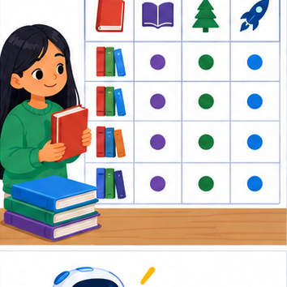
THINKER MISSION
Repair a mixed-up class-pet dataset.
Thinker name and date:
Readiness for the connected explanation
What does row["used"] mean?
This week’s end goal
By the end, I can read a table schema and distinguish a numeric value from its text representation.
Student lesson · 2 of 18
Notice the evidence
Investigate the supplied Rows Columns and Data Types case. Separate observations, given facts and assumptions before choosing an explanation.
PICTURE STORY
Notice → Predict → Explain
Begin with visible evidence. Do not explain more than the picture and information support.
Start with this puzzle
MYSTERY
The learners must use rows, columns, and data types to solve a problem. What information do they have? What decision or calculation do they make? What would count as evidence that it worked?
Three observations (what you can point to):
My prediction and the clue supporting it:
A closer explanation
A fictional classroom logs the duration of each activity. Before comparing durations, define a schema: activity is nonempty text, minutes is an integer from 0 through 60, and each row describes one activity session.
These decisions make data interpretable.
Student lesson · 3 of 18
See how it works
Follow the mechanism for Rows Columns and Data Types. Connect each labelled input, deciding step and result.
VISUAL MECHANISM
Input → Process → Output
Trace the information. At each stage, ask what changed and how you could test it.
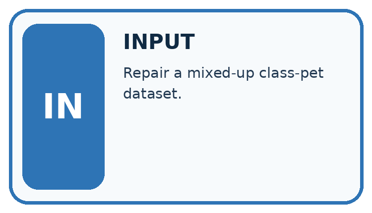
↓
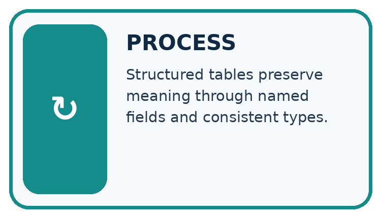
↓
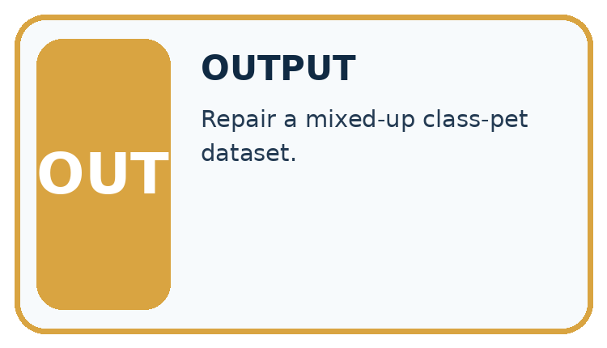
Which stage could fail even when the other two are correct? Explain:
A closer explanation
rows = [{"activity": "Reading", "minutes": 12},
{"activity": "Sorting", "minutes": 0}]
for row in rows:
valid = (type(row["activity"]) is str
and len(row["activity"]) > 0
and type(row["minutes"]) is int
and 0 <= row["minutes"] <= 60)
print(valid)Follow the evidence
The worked script prints True twice. type(value) is int checks the exact type here and avoids accepting a Boolean as a count. The chained comparison checks both boundaries.
The example assumes both keys exist; next week handles missing fields. A zero duration is allowed by this written schema.
Check a row in separate steps
A schema is a checklist for what a row must contain. First ask whether the activity name is text and is not empty. Next ask whether minutes is an integer.
Then ask whether that integer lies between 0 and 60, including both ends. Keep these checks separate when explaining a rejection.
The number 12 and the text "12" look similar on a page, but only the number meets this lesson’s minutes rule.
Connect the picture and the explanation
Point to the input, the deciding step and the result in this week’s visual. Explain the same step in ordinary words. A picture helps when you can say what each part represents.
Student lesson · 4 of 18
Compare the cases
Compare the supplied cases for Rows Columns and Data Types. Identify the detail that changes the conclusion.
The case to investigate
CASE GALLERY
Four Tests, Four Kinds of Evidence
A system is not understood until it survives more than one comfortable example.


The normal case
NORMAL CASE: predict and name evidence. BOUNDARY CASE: predict and name evidence.


Check missing information
MISSING INFORMATION: predict and name evidence. TRANSFER CASE: predict and name evidence.
Which case is most likely to reveal a hidden assumption? Why?
Change one thing in the pictured case
Change one thing
Change: Change B’s pages from "90" to integer 90 using an approved repair.
Predicted result
Prediction: B now satisfies the declared schema.
Why the result follows
Reason: Its id is nonempty and illustrated is Boolean; the page-type defect is removed.
Student lesson · 5 of 18
Words that unlock the idea
Use the vocabulary of Rows Columns and Data Types to explain a concrete decision, rather than only memorising definitions.
VOCABULARY LAB
Words You Can Use to Reason
A definition matters when you can recognize the idea, use it, and contrast it with a near-miss.
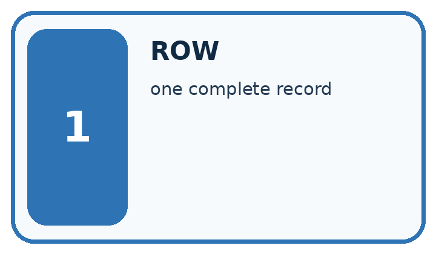
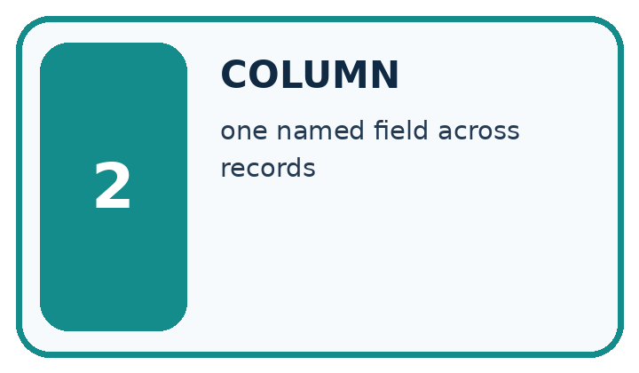
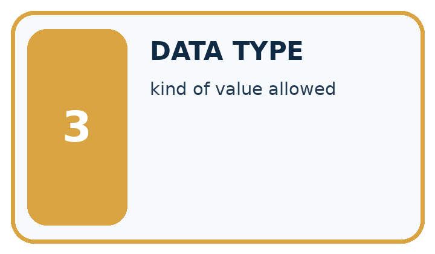
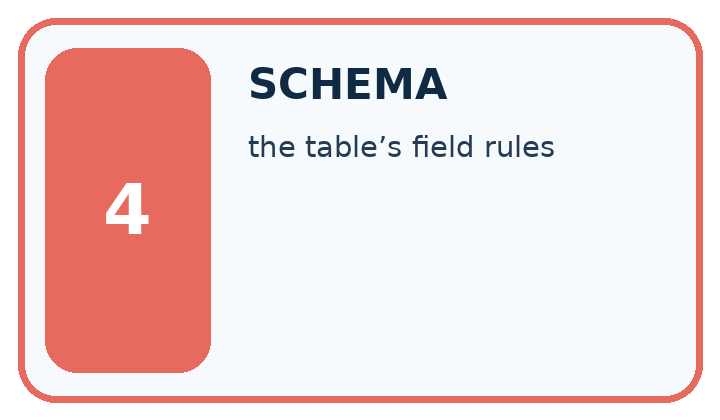
| Word | My own example | Not this / boundary |
|---|---|---|
| row | One record or example in a table. | |
| column | A table field containing the same kind of information across rows. | |
| data type | A category of values, such as number, text or Boolean, with defined operations. | |
| schema | A specification of required fields, types and structural rules for data. |
Words used in the closer explanation
| Word | Meaning |
|---|---|
| Type | A category such as integer or text |
| Unit | The quantity scale attached to a number |
| Constraint | A rule a valid record must satisfy |
Student lesson · 6 of 18
Follow a worked example
Follow the worked trace for Rows Columns and Data Types, predict a step, then compare with its explanation.
WORKED EVIDENCE
Reason Step by Step
Predict first. Then check each step. A correct answer without visible reasoning is incomplete evidence.
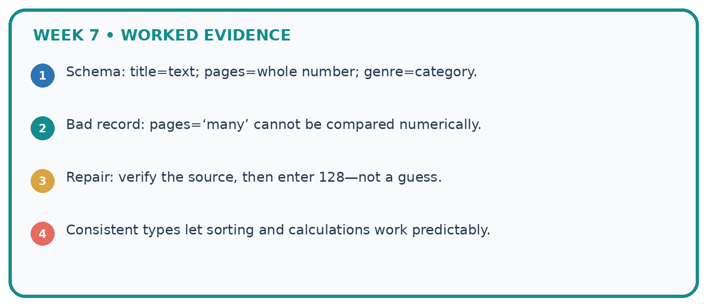
1. Schema: title=text; pages=whole number; genre=category.
2. Bad record: pages=‘many’ cannot be compared numerically.
3. Repair: verify the source, then enter 128—not a guess.
4. Consistent types let sorting and calculations work predictably.
Recalculate, retrace, or restate the reasoning in your own representation:
CHECK Did the evidence answer the exact question? Did the total, path, or source record stay consistent?
A closer explanation
Learn from the worked case
Cover the result before checking it. Say what is given, choose the procedure, and follow one step at a time. Then uncover the result and explain your first mismatch. Ask why a step is allowed, not only what number it produces.
A pictorial worked case: Rows Columns and Data Types
A fictional approved book catalogue has three fields per row.
The facts we will use
Supplied facts
Schema: id is nonempty text; pages is an integer 1–300; illustrated is Boolean True or False.
Supplied facts
Rows A={id:"B7",pages:90,illustrated:True}; B={id:"B8",pages:"90",illustrated:False}; C={id:"",pages:80,illustrated:True}.
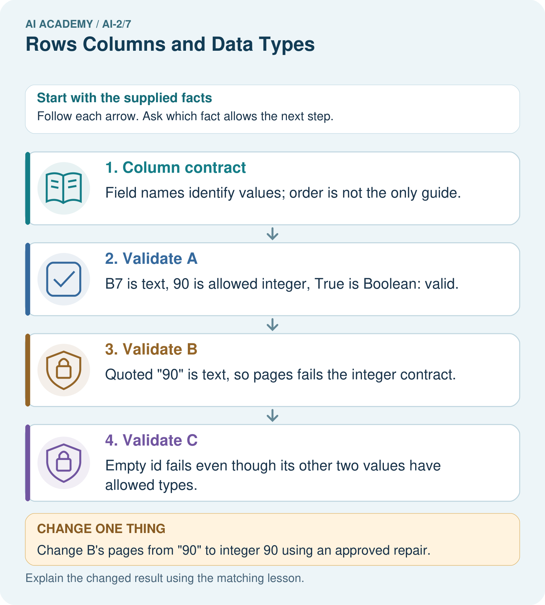
Read the picture one step at a time
Why this result follows
Why the result follows
A schema makes row meanings and expected types explicit. The string "90" looks like a number when printed but does not meet this strict integer schema. A repair can be authorised later, but must not be assumed silently.
Missing or empty identifiers also prevent tracing an item back to its source.
What this example does not establish
Keep the stated limit
Schema validity does not confirm that the book really has 90 pages or that its metadata is accurate.
Keep the stated limit
Read the labelled picture: Which two rows originally fail, and do they fail for the same reason?
Keep the stated limit
Change one thing: Change B’s pages from "90" to integer 90 using an approved repair. Predict the result before checking the explanation. What remains the same?
Student lesson · 7 of 18
Find and repair a mistake
Find the unsupported step in the Rows Columns and Data Types claim and explain a repair using the supplied evidence.
Find the first error
ERROR DETECTIVE
Compare → Diagnose → Repair
Do not patch the answer. Find the earliest unsupported assumption, wrong step, or weak evidence.
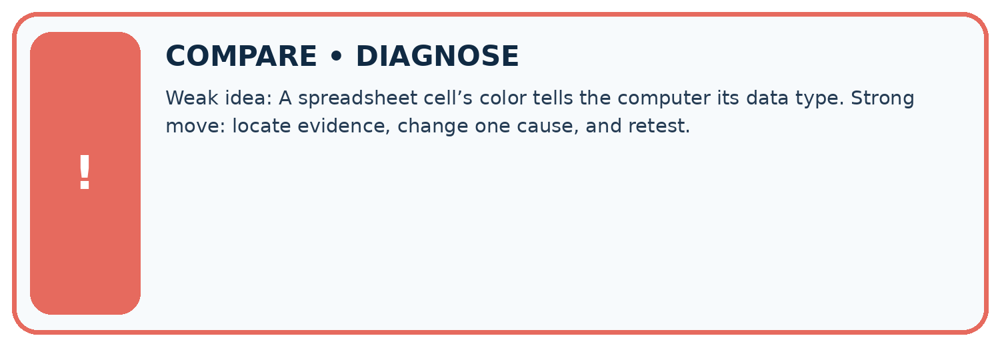
| Evidence record | Expected | Actual | Likely cause / next test |
|---|---|---|---|
| normal case | works | ||
| boundary case | stated rule | ||
| missing input | safe response | ||
| fresh transfer | generalizes |
Repair one cause. Why is this repair better than changing several things?
A closer explanation
A row can satisfy every schema rule and still be a wrong observation. Schema validation checks our stated structure and constraints, not whether someone measured honestly or selected a representative sample.
Student lesson · 8 of 18
Practise together
Practise Rows Columns and Data Types with support, then explain the deciding step in your own words.
LOGIC STUDIO
Trace Before You Run
Block code, pseudocode, tables, and diagrams are different ways to expose the same reasoning.

SET evidence_record PREDICT expected_result RUN one normal case and one boundary case COMPARE actual_result with expected_result IF different: locate first cause; change one factor; RETEST EXPLAIN result, limitation, and next safe step
Trace one input. Which line changes the state or chooses a path?
A closer explanation
If one row records 120 seconds in the minutes field, a simple numeric total becomes misleading. Correct the source or explicitly convert and document it; renaming a column alone does not convert values.
Practise with less help: Classify records
Use workbook W2 for the connected example “Rows columns and schemas”. First fill the input and rule boxes. Try the middle steps before asking for a hint. After a hint, try the next step yourself.
| Plan | Do | Check |
|---|---|---|
| What is given? Which rule or procedure applies? | Record each intermediate step. | Does the result follow? What remains unknown? |
Explain your trace to a partner. Your partner points to one step to check. Swap roles on the next case. Each person writes their own explanation.
Check your reasoning
Use the worked case for Rows columns and schemas. Proposed explanation: “A successful run proves the conclusion”. Decide whether this explanation is supported.
Point to the step or supplied fact that decides; explain your repair if needed.
Answer on your own before discussion. If you are unsure, say which step you need help with.
Explain the picture
Which two rows originally fail, and do they fail for the same reason?
This is supported practice. Keep the separately named independent case for an attempt before feedback.
Student lesson · 9 of 18
Run the investigation
Investigate Rows Columns and Data Types. Record the prediction, actual observation or labelled paper trace, explanation and next test separately.
EVIDENCE LAB
Predict → Test → Record → Explain
Keep expected and actual results separate. Surprises are useful data when recorded honestly.
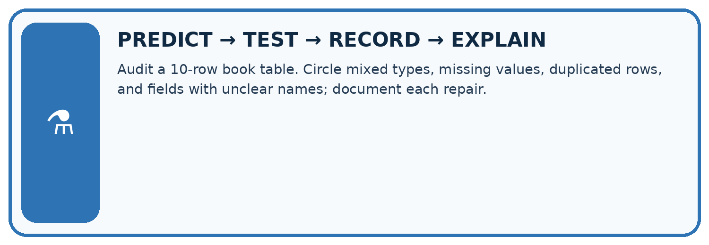
Audit a 10-row book table. Circle mixed types, missing values, duplicated rows, and fields with unclear names; document each repair.
| Test / input | Prediction | Actual | Evidence / calculation | Change or keep? |
|---|---|---|---|---|
| normal | ||||
| boundary | ||||
| missing | ||||
| fresh transfer |
What did the hardest test teach you that the normal test did not?
Plan → try → check
Before trying: what do I expect, and why? While trying: which step could first go wrong? Afterwards: what did I actually observe, and what should change? Keep “not run” if you only traced the procedure.
Student lesson · 10 of 18
Build your understanding
Move from recall to tracing, diagnosis and transfer in Rows Columns and Data Types. Explain why each step is justified.
MASTERY
From Knowing the Word to Owning the Idea
Move upward only when you can produce evidence without copying the worked example.

1 • NAME: Define the concept without repeating the textbook.
2 • TRACE: Show the information, state, branch, calculation, or evidence path.
3 • APPLY: Solve a different example independently.
4 • CHALLENGE: Find a boundary case, counterexample, or unfair outcome.
5 • EXPLAIN LIMITS: Say when the result should not be trusted or used alone.
My strongest evidence of independent understanding:
Student lesson · 11 of 18
Connect your project
Apply this week’s idea to Transparent Book Recommender. Keep an annotated decision and the evidence supporting it.
CUMULATIVE PROJECT
Transparent Book Recommender
Every week adds one inspectable piece. The system must show how it reached a result.
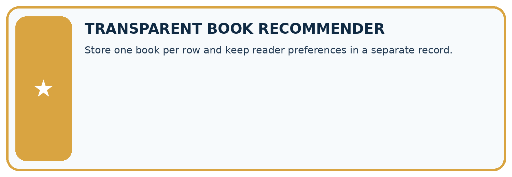
THIS WEEK’S CHECKPOINT Store one book per row and keep reader preferences in a separate record.
Trace the system
SYSTEM MAP Reader need → allowed inputs → transparent rule or score → ranked candidates → explanation → test record → human decision
What will you add, change, or verify in the project this week?
What should remain under human control?
Responsible design
RESPONSIBLE DESIGN Collect only necessary information. Show uncertainty and limits. Never confuse a ranking with a fact about a person.
Evidence for your project
Publish the recommender’s row schema and validation results before ranking books, preserving repair provenance.
Student lesson · 12 of 18
Show what you know
Use a genuinely new case for independent evidence. Previously discussed examples remain practice; use the separately named independent case before feedback.
Independent evidence
INDEPENDENT MASTERY PROOF
Explain • Transfer • Test • Defend
Complete this page without copying the worked example. Your reasoning matters more than decoration.
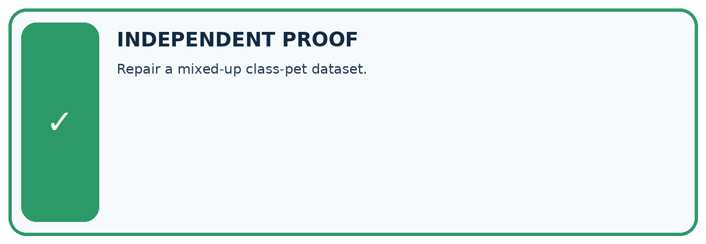
Try a more demanding case
CHALLENGE Repair a mixed-up class-pet dataset.
1. My fresh example, trace, calculation, or design:
2. My evidence that it works (include a boundary or missing-data case):
3. One limitation, fairness concern, or situation needing human review:
Check your explanation
SELF-CHECK □ I explained the mechanism □ I used evidence □ I tested a fresh case □ I named a limitation □ I can answer ‘why?’
Student lesson · 13 of 18
Study a complete case
Revisit the complete Rows Columns and Data Types case for supported practice. Repeated examples do not become fresh assessments.
Week 7 Worked case
Use the supplied details to practise the weekly concept before attempting the independent question. This case extends the illustrated lesson.
The situation
Fields are Title, Pages and Borrowed; a row contains River, ninety and yes.
The question
Assign intended types and a repair.
Worked explanation
Text, numeric and Boolean. Confirm ninety means 90, then convert and record the change; use a consistent Boolean representation.
Explain it in your own words
Which detail supports the answer, and why does it matter?
Trace the supplied case visually
A field has a meaning and a type
| Evidence or stage | Value or result |
|---|---|
| Title | Text → River |
| Pages | Number → 90 after checking source |
| Borrowed | Boolean → true or false |
Fields are Title, Pages and Borrowed; a row contains River, ninety and yes.
Assign intended types and a repair.
Text, numeric and Boolean. Confirm ninety means 90, then convert and record the change; use a consistent Boolean representation.
Student lesson · 14 of 18
Try a new case independently
Attempt the reserved new case before feedback. Record support; the earlier examples below remain additional practice.
Independent case: Design a schema independently
For a fictional shelf audit, define label and book_count fields. Require a nonempty text label and an integer count from 0 to 40. Give two valid and two invalid records with reasons.
Attempt this case before feedback. Record any help. Earlier examples below are further practice; a case already practised with feedback cannot establish fresh transfer.
Week 7 Independent application
Close the worked explanation. Apply the idea to this different question without copying.
A table row is book_id B7, pages 84, available true. Name the type of each field and explain why pages stored as eighty-four complicates calculation.
My answer, with a trace, calculation or supporting evidence
Create and test
Change one relevant detail. Predict the result before testing. Include a boundary or missing-information case when it helps reveal a limit.
My changed input and expected result
Connect to your project
Store one book per row and keep reader preferences in a separate record.
The evidence I will keep
Your teacher has the independent answer and scoring criteria. Complete the matching workbook week to keep your practice evidence together.
Transfer practice from the original programme
A row contains title='Sky', pages='120', available='false'. Explain why treating nonempty text as true can misread availability. Propose explicit conversions and a rejected-input case.
Use feedback to improve
Attempt the independent case before hints. Record whether you worked alone, used a hint or followed a model. After feedback, fix the first unsupported step and explain why it changed.
A later check uses a changed case, not a copied answer.
Student lesson · 15 of 18
Your lesson route
Use this map to navigate Rows Columns and Data Types, connect the goals to tasks and keep one evidence record for each attempt.
Start with this question: A fictional approved book catalogue has three fields per row.
| By the end, I can | How I will show it |
|---|---|
| Specify a table schema | Explain the deciding step, show a trace or test, and state one limit. |
| Check types and units as well as names | Explain the deciding step, show a trace or test, and state one limit. |
| Distinguish structural validity from truth | Explain the deciding step, show a trace or test, and state one limit. |
Remember → watch and explain → try with help → investigate → try independently → keep project evidence. Your teacher may spread this lesson across several classes.
Keep your first prediction. Compare it with what the evidence shows and explain any change.
Student lesson · 16 of 18
Finish and return
Explain Rows Columns and Data Types without notes, identify a remaining question and plan a later check with a changed case.
Close your notes. Explain this goal in your own words: Specify a table schema
If you are unsure, return to the worked picture and explain one arrow. If you are ready, change an input or assumption and justify your prediction.
Save your workbook evidence. At the next review, try a different case before opening your old answer.
Student lesson · 17 of 18
Supported practice, repair and portfolio
Attempt supported questions before using hints or feedback. Review a missing building block, then keep the completed work.
Use this supported practice once, in the browser or on paper. Keep the reserved independent assessment for a separate first attempt before teacher feedback.
A fictional approved book catalogue has three fields per row.
Practice 1: explain the deciding evidence
Which labelled step matches this detail? Empty id fails even though its other two values have allowed types.
1. Column contract
2. Validate C
3. Validate B
4. Validate A
Hint · try first
Hint if needed: Read the steps in the pictorial case. Match the supplied detail to the stage that performs or records it.
Feedback · compare after trying
After your attempt, compare with the supported explanation: Validate C Empty id fails even though its other two values have allowed types. A schema makes row meanings and expected types explicit.
The string "90" looks like a number when printed but does not meet this strict integer schema. A repair can be authorised later, but must not be assumed silently.
Missing or empty identifiers also prevent tracing an item back to its source.
Practice 2: explain the deciding evidence
Changed case · predict first
Changed-case practice: Change B’s pages from "90" to integer 90 using an approved repair. Which conclusion is supported by the supplied facts?
1. B now satisfies the declared schema.
2. We can decide the result without examining the changed input or the procedure.
3. This one example guarantees correct results for every future input.
Hint · try first
Hint if needed: Use the changed condition and the deciding step in the pictorial trace. The answer must say what follows from those facts.
Feedback · compare after trying
After your attempt, compare with the supported explanation: B now satisfies the declared schema. Its id is nonempty and illustrated is Boolean; the page-type defect is removed.
Repair a missing building block
Review Debugging Strategies (ai-2/6). Goal: Design revealing tests for a function. Short practice: Which test most directly isolates the handling of loose books, and what should it produce?.
Return to this week and explain what you changed.
Review Trace Tables (ai-2/4). Goal: Trace variable values before and after each loop iteration. Short practice: Move print inside the original loop. What sequence is displayed?.
Return to this week and explain what you changed.
Review Precision in Algorithms (ai-2/1). Goal: Translate a short paper calculation into a Python script. Short practice: If print(total) moves before total=total+2, what gets printed for the original input?.
Return to this week and explain what you changed.
Predict, run and debug
The browser lab lets you edit the supported Python examples already included in this lesson. Predict first, run, inspect the actual output or error, change one input, then run again.
Keep code, predictions, actual results and a reasoned revision together. On paper, label your result as a trace rather than an execution.
Keep your completed work
Use Download completed work in the hosted lesson to export your answers, reflections, practice feedback and code-run evidence. Open the HTML copy to read or print it.
Drafts stay in this browser when storage is available; clear drafts on a shared device.
Student lesson · 18 of 18
Visual concept journey
Explain each Rows Columns and Data Types graphic using its labels, deciding evidence and relevant limitation.
01. Rows Columns and Data Types: the case
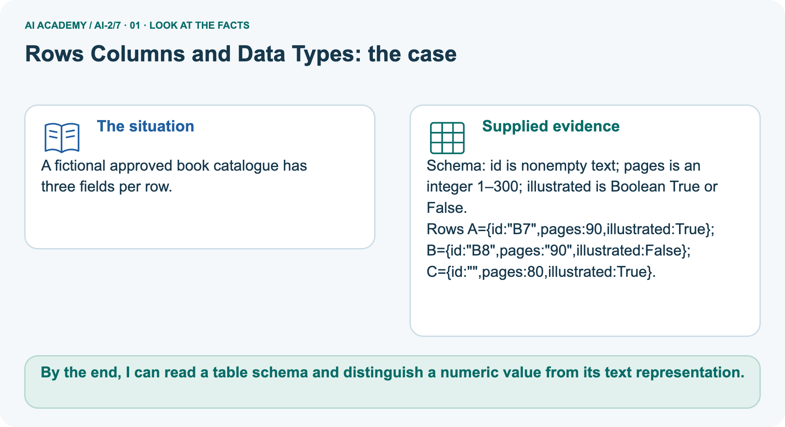
A fictional approved book catalogue has three fields per row. Supplied facts: Schema: id is nonempty text; pages is an integer 1–300; illustrated is Boolean True or False.
Rows A={id:"B7",pages:90,illustrated:True}; B={id:"B8",pages:"90",illustrated:False}; C={id:"",pages:80,illustrated:True}.
Point to the given fact that matters most. Explain why it matters.
02. Follow the deciding steps
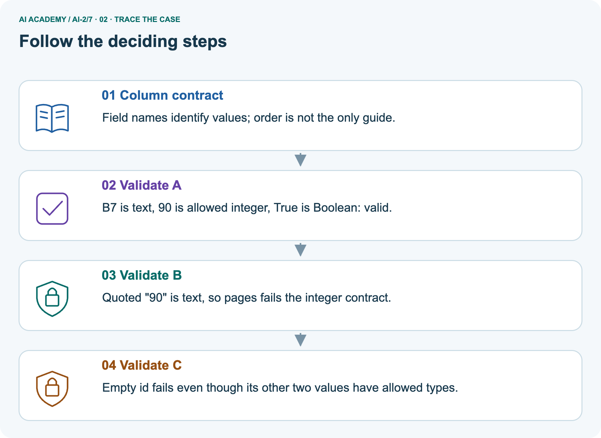
Column contract: Field names identify values; order is not the only guide. → Validate A: B7 is text, 90 is allowed integer, True is Boolean: valid. → Validate B: Quoted "90" is text, so pages fails the integer contract. → Validate C: Empty id fails even though its other two values have allowed types.
Point to each numbered stage and explain which recorded input it uses.
03. Follow the evidence
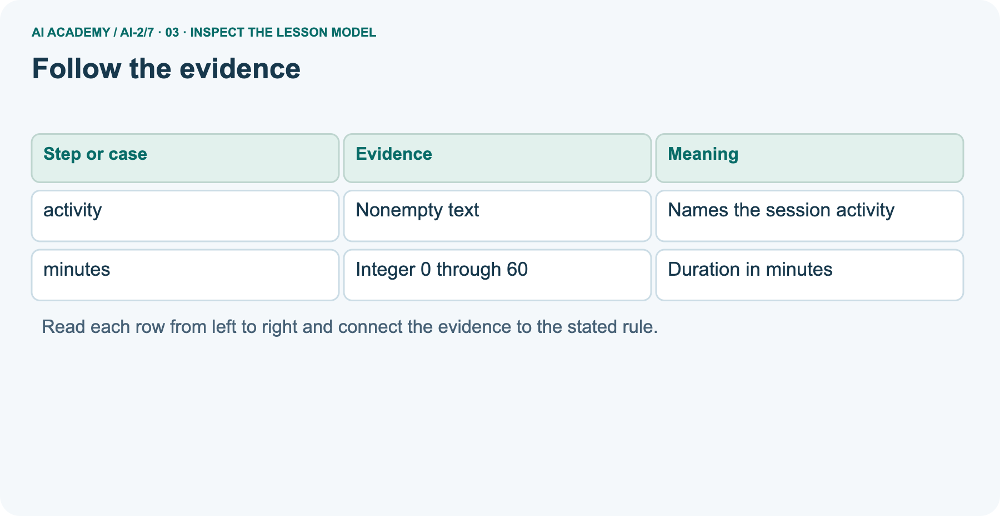
Follow the evidence. activity | Nonempty text | Names the session activity. minutes | Integer 0 through 60 | Duration in minutes
Read the labels and values. Explain the relationship the model shows.
04. Change one thing. Trace what follows.
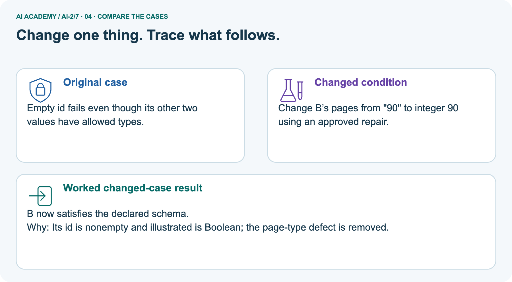
Original case: Empty id fails even though its other two values have allowed types. Changed condition: Change B’s pages from "90" to integer 90 using an approved repair. Expected result: B now satisfies the declared schema.
Reason: Its id is nonempty and illustrated is Boolean; the page-type defect is removed.
Predict before checking the worked changed-case result. Name what changed and what the supplied facts allow you to conclude.
05. Connect the explanation to its limit
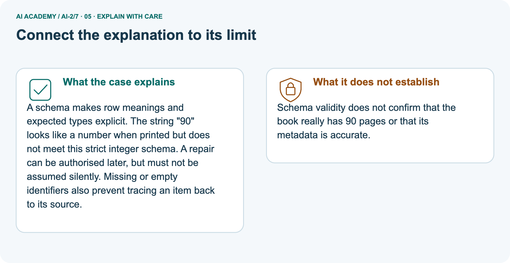
A schema makes row meanings and expected types explicit. The string "90" looks like a number when printed but does not meet this strict integer schema. A repair can be authorised later, but must not be assumed silently.
Missing or empty identifiers also prevent tracing an item back to its source. Limit: Schema validity does not confirm that the book really has 90 pages or that its metadata is accurate.
Explain the case, then point to a limit on the claim.
06. Make the idea visible in your project
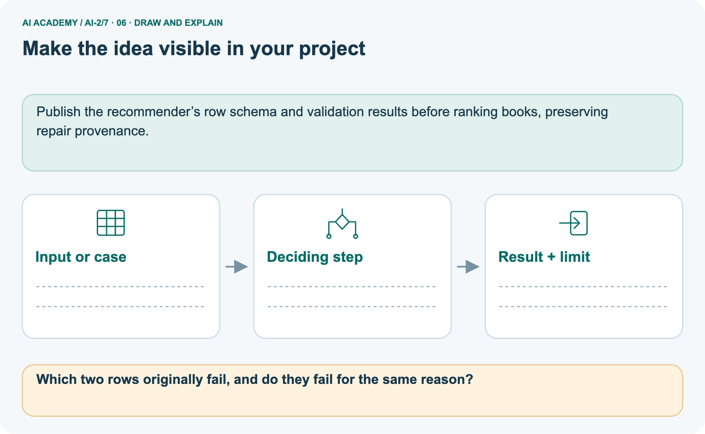
Publish the recommender’s row schema and validation results before ranking books, preserving repair provenance. Draw your input, deciding step, result and limit.
Supported question: Which two rows originally fail, and do they fail for the same reason?
Draw your project trace and justify the deciding step using evidence.